Magic Kingdom - Kid Friendly Day
A day for the whole family to enjoy at the Magic Kingdom. Making sure that you get to the parks early is very important especially if you have kids that don't like to wait in long lines. By getting to the parks early you eleminate time that you would be wasting in lines.
Peter Pan's Flight
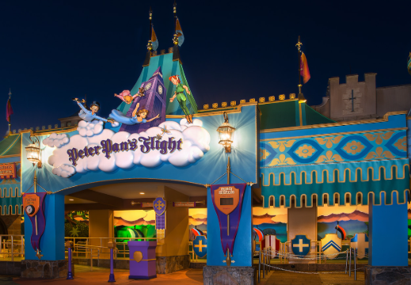The very first ride that you head to once you are in the parks is Peter Pan's Flight. This ride gets a very long line so by heading over here first you wont have to worry about that. Kids love this ride because you are sat in a boat flying through the sky with peter pan as you make your way to his world.
Jungle Cruise
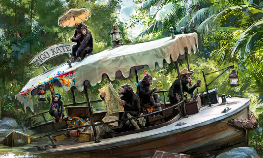This ride is pretty close to the first ride which is good because this ride can also build up quite the line. As you sit in the boat you listen to your skipper tell funny jokes while you make your way through the jungle.
Haunted Mansion
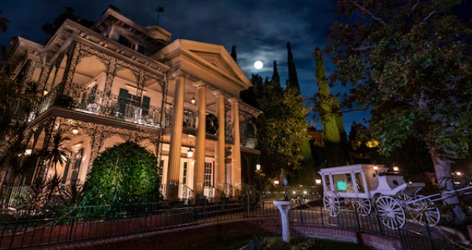This ride is full with ghost so if your little one is afriad of friendly haunts be sure to skip this one. But this is also right by the Jungle Cruise. As you make your way through the Haunted Mansion you will see how all the ghost live their daily lives.
It's a Small World
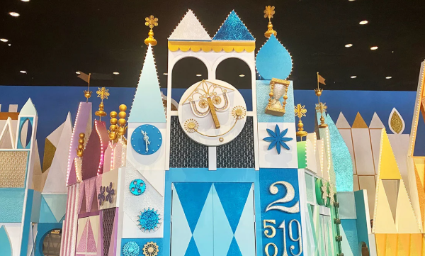Next head over to It's a small world. This ride is filled with a bunch of different dolls and showcases all of the different countries and their cultures.
The Magic Carpets of Aladian
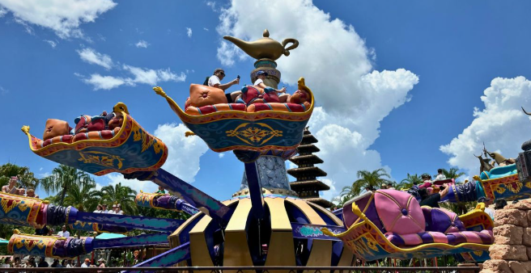This ride is right around the corrner and is always pretty quick to get on. Kids love this ride because they get to control how high or low they are while you go in circles in the air.
Dumbo the Flying Elephant
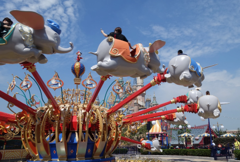This ride is right around the corrner and is always pretty quick to get on.There is also a play area for kids to play in while they wait for their turn to ride the ride which makes it perfect for those who don't like to wait in line. Kids love this ride because they get to control how high or low they are while you go in circles in the air.
Tomorrowland Speedway
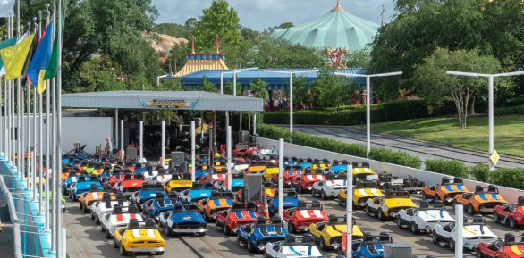This ride is located in Tomorrowland and is great for kids who like to race. While your kids are in this ride they can race other people that are driving and it is perfect for those who have always wanted to drive a racecar.
Under the Sea - Journey of the Little Mermaid
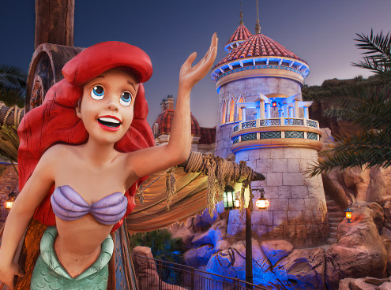This ride is perfect for those looking to cool off as it is inside and gives people the perfect chance to cool off while going on adventure with Ariel.
The Barnstormer
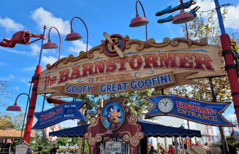For little kids who want the thrill of riding a rollercoaster but just aren't tall enough for the real thing this is perfect. Goofy's Barnstormer is a very fun ride and usally doesn't ever have too long of a wait.
Mad Tea Party
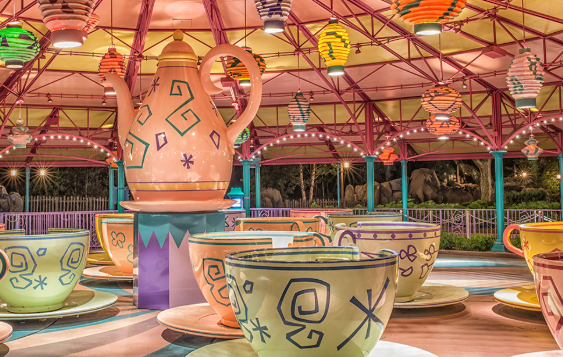This ride is you guessed it tea cups. As you get on beaware that this ride can spin as fast as you make it spin so if you get dizzy easily this might not be the ride for you. However you don't have to spin so keep that in mind as well.
Prince Charming Regal Carousel
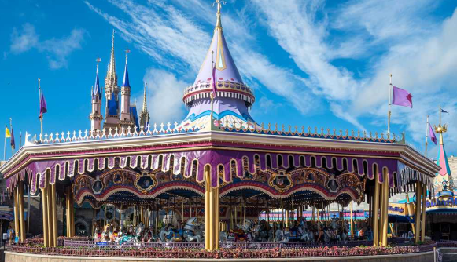This gives kids the perfect opertunity to chose what kind of animal they want to ride on the back of and it just goes in circles. For parents if you don't want to get on the back of an animal you can chose to stand next to your kid as long as you hold on.
The People Mover
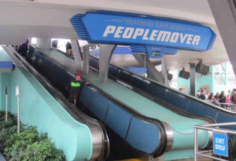Finally head back over to tomorrowland where you will find the people mover. This ride is usally a walk on as there is always carts moving. This is the perfect ride to end your day because it takes you on a little tour through Tomorrowland and you get to see all of the different rides behind the seen as you are on the tour.